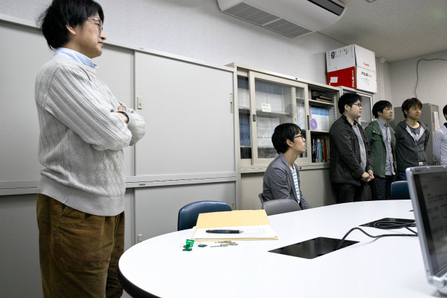
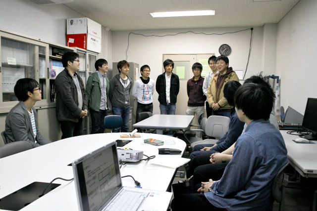
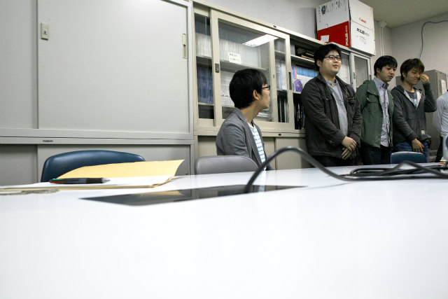
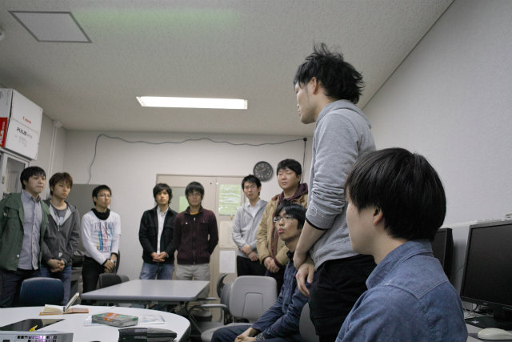
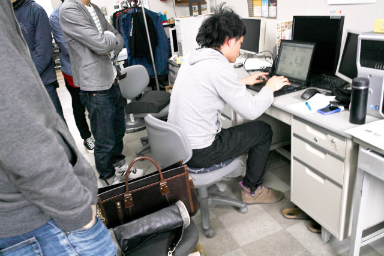
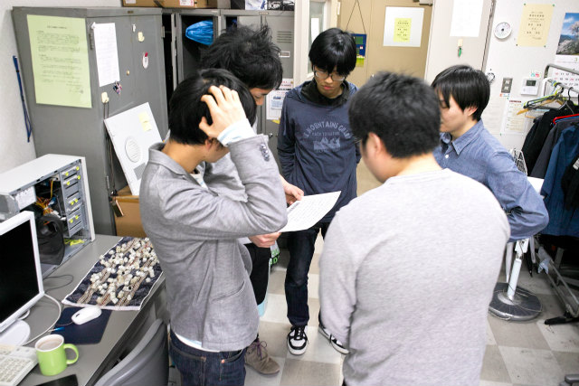
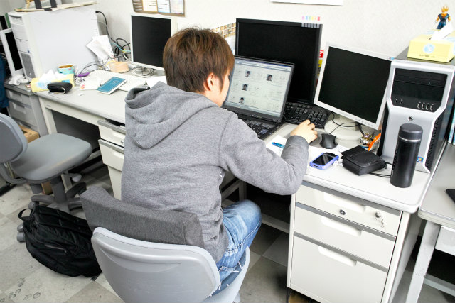

去年は6名でしたが、今年は学部4年生4名が計測研に配属しました。今日から卒研がスタート！コツコツと研究しましょう。学問に王道無しです。
みんな揃った？
M2から自己紹介
M1ムーくんから自己紹介
B4から自己紹介
名簿データ入力

シート作者の幹事、大幹事が見守ります
研究テーマどうしよ？
幹事は名簿作りに勤しみます
| ・新4年生配属 (H25.04.01) | |||
去年は6名でしたが、今年は学部4年生4名が計測研に配属しました。今日から卒研がスタート！コツコツと研究しましょう。学問に王道無しです。 |
|||
|

みんな揃った？ |

M2から自己紹介 | ||
|

M1ムーくんから自己紹介 |

B4から自己紹介 | ||
|

名簿データ入力 |
シート作者の幹事、大幹事が見守ります | ||
|

研究テーマどうしよ？ |

幹事は名簿作りに勤しみます | ||